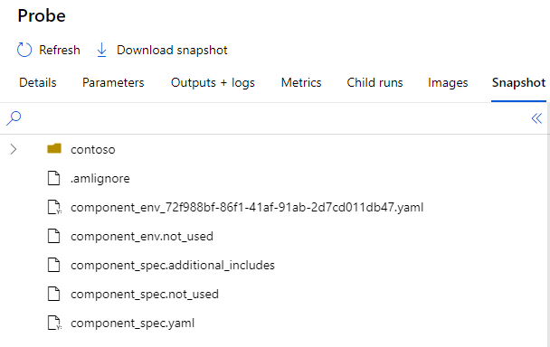
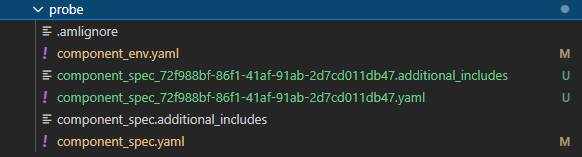

Submission-time override
Motivation
A common scenario is when running experiments in different workspaces under different tenants, some fields need to changed accordingly, e.g. tags and docker base image. Internally at Microsoft, non-Heron workspaces do not have access to Polymer Python Package Index, and for Heron workspaces, base images are stored in different registries (polymerprod.azurecr.io, polymerppe.azurecr.io, polymerdev.azurecr.io) for different workspaces (e.g., PROD, PPE, public eyes-on). Users have to modify those fields manually when submitting experiments to a different workspace, which is not an optimal data science experience, and could easily lead to typos and errors.
Prerequisites
To enjoy this documentation, you should be familiar with how to create an AML pipeline and how to configure your AML pipeline.
Submission-time override
To allow components to operate across multiple workspaces, we now support submission time override, by which the corresponding fields are modified as user defined and reverted back after submission. The intial RFC (Request For Comment) can be found here.
Controlling which components to override
Only components using the "local" copy will be modified at submission time, so you need to define those components in module_loader.use_local or set it to "*".
Adding tenant_overrides section to your pipeline yaml
With the additional code block tenant_overrides, when you submit an experiment, the shrike.pipeline package will check which tenant is being used, and performs the corresponding override.
defaults:
- aml: eyesoff
- compute: eyesoff
- modules: module_defaults
run:
experiment_name: test
tags:
accelerator_repo: test
module_loader:
local_steps_folder: ../../../components
use_local: "*"
## Adding the following section for this new feature
tenant_overrides:
allow_override: true # optional, default = false
keep_modified_files: false # optional, default = false
mapping:
# MSIT tenant
72f988bf-86f1-41af-91ab-2d7cd011db47:
remove_polymer_pkg_idx: true # optional, default = false
environment.docker.image:
polymerprod.azurecr.io/polymercd/prod_official/azureml_base_gpu_openmpi312cuda101cudnn7: mcr.microsoft.com/azureml/openmpi3.1.2-cuda10.1-cudnn7-ubuntu18.04
polymerprod.azurecr.io/polymercd/prod_official/fake_image: mcr.microsoft.com/azureml/fake_image
tags:
workspace: eyeson
personal: # using file name to specify tenant instead of id
environment.docker.image:
'polymerprod.azurecr.io/polymercd/prod_official/(.+)': 'polymerdev.azurecr.io/polymercd/dev_official/\g<1>'
tenant_overrides, you could specify three fields:
- allow_override: optional, set to False by default. This boolean controls whether the submission-time override functionality will be executed or not.
- keep_modified_files: optional, set to False by default. If True, then the modified files (spec.yaml, env.yaml, etc.) will be saved and renamed as <filename>_<tenant_id>.<extension>.
- mapping: (nested) dictionary-style definition. If this tenant is being used with allow_override = True, then all local components will be scanned and the matching fields defined in this mapping section will be changed.
- Keys: tenant_id (e.g.: 72f988bf-86f1-41af-91ab-2d7cd011db47) or "aml configuration" filename in <config-dir>/aml (which is also used as in defaults: aml in this yaml file).
- Values: (nested) dictionaries, e.g. environment.docker.image. You could define the override for any field in component schema.
- For string-type fields such as environment.docker.image, the override pattern is "old_value: new_value". For dict-type fields such as tags, the pattern is "key: new_value". In the example above, when running under MSIT tenant, the original spec.yaml with
tags:
workspace: eyesoff
tags:
workspace: eyeson
'polymerprod.azurecr.io/polymercd/prod_official/(.+)': 'polymerdev.azurecr.io/polymercd/dev_official/\g<1>'
remove_polymer_pkg_idx: in addition to fields defined in component schema, you could also define this boolean where the default value is False. If set to True, the index url "https://o365exchange.pkgs.visualstudio.com/_packaging/PolymerPythonPackages/pypi/simple/" will be removed from environment.conda.conda_dependencies or conda_dependencies_file.
Summary
In short, to allow submission-time override,
- Add component keys or
"*"tomodule_loader.use_local - Add
tenant_overridessection to pipeline yaml file, withallow_override: true- nested dictionary
mappingwith tenant_id or "aml configuration" filename as keys
- Submit your pipeline as usual. In your "snapshot" of the experiment on Azure ML portal,
component_spec.yamlshould be updated, while the original copies are renamed as<filename>.not_used(temporarily). The local filenames will be reverted.
Example:
Fig 1: original code structure on local machine

Fig 2: Azure ML portal

Fig 3: modified code after submission on local machine with keep_modified_files set to False (if False, it will be same as before submission)